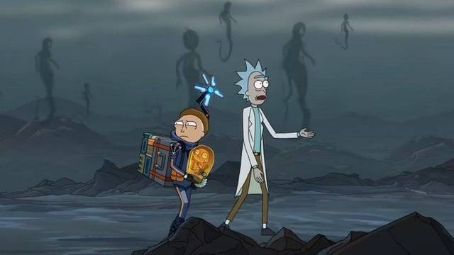

La campaña publicitaria de Death Stranding ha sido curiosa y hasta cierto punto innovadora. Hasta hace pocos meses, y desde su anuncio en el E3 2016, Kojima Productions y PlayStation decidieron enfocar los tráilers del juego desde el misterio, dejando dudas a los posibles jugadores sobre qué se iban a encontrar. A ello hay que sumar una emisión en Twitch previa al primer tráiler con jugabilidad en la que se iban mostrando más manos conforme más espectadores hubiera. Desde la Gamescom 2019 se han mostrado muchas más escenas jugables y cinemáticas (para algunos, quizá demasiadas). El último spot publicitario es una colaboración con una de las series de animación para adultos más populares de los últimos años: Rick & Morty.
En el vídeo protagonizado por los personajes de AdultSwim, Rick y Morty transitan por el desolador mundo ideado por Hideo Kojima: unos Estados Unidos postapocalípticos que, además, están repletos de unas criaturas fantasmagóricas que flotan por el lugar. Los protagonistas de la serie incluso mencionan directamente a Hideo Kojima, en una suerte de rotura de la cuarta pared.
Mientras andan por el oscuro mundo y se preguntan qué son esos fantasmas que los rodean, Morty dice que lleva todo el rato con un bebé en un tubo, a lo que Rick le responde que probablemente sea un power-up típico de los videojuegos que les permitirá correr más rápido y saltar muy alto. Tras empujarlo contra el pecho de Morty y ver que no se disuelve con su cuerpo cual champiñón de Super Mario, el vídeo acaba con la conclusión más lógica a la que pueden llegar estos dos: "Vale, vamos a comernos el bebé".
El primer juego de Kojima Productions fuera de Konami llegará este viernes 8 de noviembre a PlayStation 4. En verano de 2020, 505 Games distribuirá el juego para PC, una versión de la que no se sabe demasiado.
En nuestro análisis puntamos el juego con un 9'2: "Valiente, original, sorprendente, único, todos estos y muchos más calificativos se pueden utilizar con Death Stranding, un soplo de aire fresco en el terreno de las grandes producciones, una anomalía que te hace recuperar la esperanza de que se pueden hacer cosas diferentes, sin necesidad de reinventar la rueda ni crear nuevos géneros, simplemente saliéndose de los caminos ya establecidos y creando nuevas rutas en el ocio interactivo."